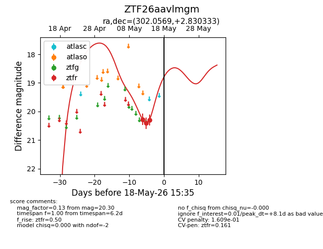
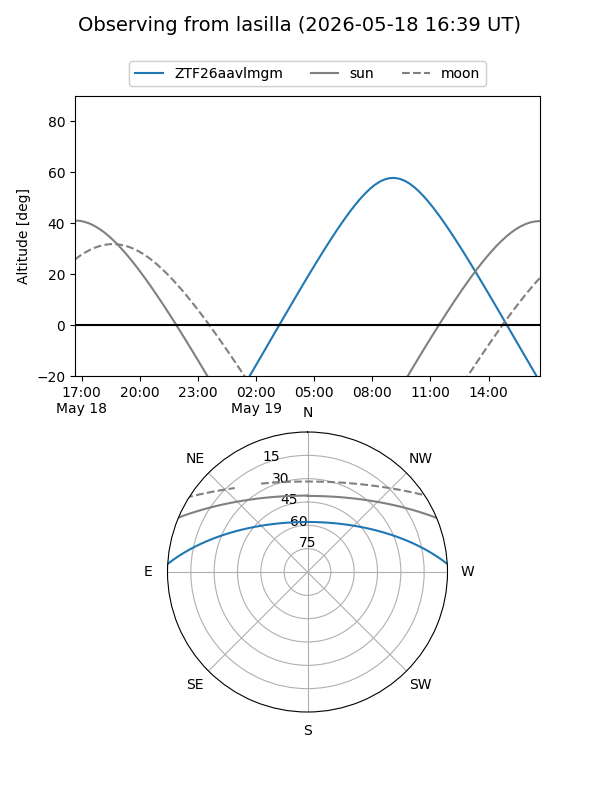
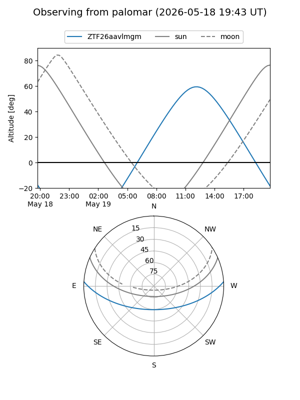
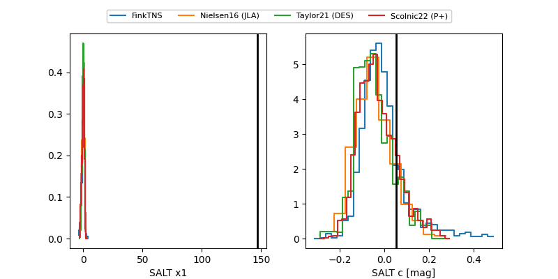

ZTF26aavlmgm
Target ZTF26aavlmgm at 2026-05-18 15:36
Aliases and brokers:
FINK: link
Lasair: link
ALeRCE: link
alt names
ZTF26aavlmgm (ztf,fink_ztf)
Coordinates:
equatorial (ra, dec) = 302.0569,+2.83033
equatorial (HMS+DMS) = 20:08:13.66,+02:49:49.20
galactic (l, b) = (44.5368,-15.65099)
Flags:
likely cv
Photometry:
last ztfr=20.30
3 ztfr detections
Lightcurve

Visibility


Additional plots
